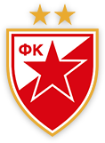

Legendarni fudbaler Crvene zvezde Rajko Mitić, rođen je u selu Dol, blizu Bele Palanke devetnaestog novembra 1922. godine. Za najtrofejniji srpski klub u kome se proslavio i stekao status prve Zvezdine zvezde odigrao je na poziciji desne "polutke" 572 utakmice i postigao 262 gola. Zbog velikog džentlmenstva koje ga je krasilo na terenu i van njega važio je za omiljenog fudbalera.
Rajko je počeo da igra fudbal na livadama beogradskog naselja Košutnjak, da bi 1940. godine u utakmici protiv ekipe zemunskog Viteza u kojoj je postigao pet golova, zabeležio prvi seniorski nastup za ekipu BSK-a. Naredne godine, po izbijanju Drugog svetskog rata na prostorima Srbije, njegov sportski razvoj stagnira sve do 1944. kada zajedno za Đajićem i Jezerkićem nastavlja da igra fudbal. Crveno-beli dres nosio je punih četrnaest sezona, od osnivanja 4. marta 1945., pa sve do novembra 1958. godine, kada se od najdražeg dresa oprostio u finalu kupa protiv mostarskog Veleža (4:0). Bio je kapiten Crvene zvezde koju je predvodio do šest titula šampiona (1946, 1951, 1953, 1956, 1957. i 1959.) dok je dva trofeja manje "podigao" u nacionalnom Kupu. Veliki sportsmen i prva zvezda našeg "sazvežđa" uradila je 7. aprila 1958. godine, nešto o čemu se i dan danas priča. Naime u prvenstvenom susretu protiv Splita dvadesetak minuta pre kraja kamenica koja je doletela iz gledališta, pogodila je u glavu Boru Kostića, nakon čega je "Veliki" Rajko povukao ekipu sa terena. Disciplinski sud FSJ kaznio je zbog toga sve igrače našeg tima izuzev Beare i Kostića jednomesečnom suspenzijom.
Po okončanju karijere, od 1960., pa u narednih šest godina, Mitić se nalazio na čelu stručnog štaba Crvene zvezde, da bi nakon toga tri godine bio savezni kapiten-selektor Fudbalskog saveza Jugoslavije.
Velika ljubav pored fudbala, bila mu je i novinarstvo, pa je još za vreme aktivnog igranja bio komentator beogradskog "Sporta", da bi se kasnije potpuno posvetio žurnalistici radeći u magazinu "Tempo" u kome je i nakon penzionisanja 1983. godine, ostao aktivan.
Velemajstor fudbala sa životne scene sišao je 29. marta 2008. godine ostavivši iza sebe neizbrisiv trag u našem klubu i našoj zemlji.
Dragoslav Šekularac rođen je u Štipu 1937. godine, i svojim golovima i igrama u Zvezdinom dresu, zaslužio je da se nađe u najužem izboru najboljeg igrača beogradskog kluba svih vremena.
"Kralj driblinga", druga Zvezdina zvezda, iza Rajka Mitića, reprezentativac kada je Jugoslavija bila olimpijski pobednik, četvrta u svetu i druga u Evropi. Sa Zvezdom, čiji je dres obukao 470 puta, osvojio je sedam titula državnog prvaka i pet kupova. Šeki ima, što je posebno apostrofirao, pozitivan bilans u derbijima s Partizanom, u utakmicama koje je smatrao najvažnijim u karijeri. Za državni tim je odigrao 41 utakmicu i dao šest golova. Kao trener, sa Zvezdom je osvojio „duplu krunu". Tim sa beogradske „Marakane", koji je ostavio svom nasledniku, u prvoj sezoni posle njegovog odlaska postao je šampion Evrope i sveta. Šeki je uvek bio u centru pažnje. Voli da se priča o njemu, anegdota i zanimljivosti ima na pretek, nemoguće je pobrojati sve, tako da smo odlučili da prenesmo neka "maestrova" razmišljana i iskustva koja je nedavno eksluzivno ispričao novinaru našeg fudbalskog kluba.
Živa legenda srpskog fudbala, kao i uvek, bez dlake na jeziku, priča o svom životu, „propuštenim" šansama, odnosu sa roditeljima, ženama, kafanama, današnjim fudbalerima, i o želji da poseti Las Vegas. Ove godine navršilo se šezdeset pet godina od osnivanja Crvene zvezde, kluba kroz koji je prošlo više hiljada vrhunskih sportista, i svaki od njih je svojim primerom na terenu i van njega doprineo da sa ponosom, milionska armija navijača izgovara ime svakoga od njih. Ipak, postoje ljudi, kojima je uspeh predodređen, osobe kojima je u zvezdama zapisano da budu uspešne i popularne, bez obzira kojim se poslom bavile. Za to je neophodno da posedujete veliki šarm, da budete džentlmen i gospodin, da vas obožavaju u društvu, da ste okruženi lepim ženama i obavezno nešto što vas izdvaja od svih ostalih, da budete jedinstveni.
Čast svakome, ali na sam pomen imena Dragoslava Šekularca, druge zvezdine zvezde, u svima od nas se budi radoznalost, želja da saznamo šta nam je to Šeki poručio, šta nas je savetovao, čime nas je nasmejao. Iako narušenog zdravlja, sa osmehom, vedrog duha, ispričao nam je neke male tajne velikih majstora, i pokušao da objasni svoju posebnost.
Dragan Džajić - Sigurno najbolji igrač u istoriji srpskog i jugoslovenskog fudbala. Rođen je u Ubu 30. maja 1946. godine, od oca Krstivoja i majke Vidosave
U Crvenu zvezdu došao je kao petnaestogodišnjak, nakon maestralno odigranog juniorskog turnira u Valjevu gde su ga zapazili "lovci na talente" najvećih klubova. Po prelasku u Beograd, Džajiću je trebalo samo šest meseci da zasluži poziv u seniorski tim, a kao važan istorijski podatak ostaće činjenica da je tadašnji trener Miša Pavić "velemajstoru" ukazao šansu 8. juna 1963. godine u utakmici sa podgoričkom Budućnošću.
Prvu titulu u crveno-belom dresu osvojio je u narednoj sezoni 1964. godine, a ostaće upamćen i kao predvodnik generacije koja je prva u istoriji zabeležila het-trik u tadašnjoj ligi Eks Jugoslavije. (1968., 1969., 1970.). Petim naslovom prvaka okitio se 1973., a uz to je i četiri puta podizao pehar namenjen osvajaču nacionalnog kupa. Nakon odlaska iz natrofejnijeg srpskog kluba svojevremeno najbolje levo krilo sveta, u svoju biografiju upisalo je i dve godine inostrane karijere. 1975. i narednu godinu proveo je u francuskom prvoligašu Bastiji za koju je odigrao osamdeset mečeva. Usledio je povratak među crveno-bele za koje je igrao sve do oproštajne utakmice 28. maja 1978. godine u Mostaru. Statistika kaže da je zabeležio rekordnih 590 mečeva u Zvezdinom dresu i postigao 287 golova, dok je za nacionalni tim nastupao 85 puta, i taj rekord bio je aktuelan sve do oktobra 2004. godine.
Nakon više nego uspešne igračke karijere Džaja je na predlog rukovodstva Crvene zvezde 1979. godine, seo u fotelju tehničkog direktora. Dvanaest godina kasnije osvajanjem titule prvaka Evrope i sveta, zajedno sa svojim saradnicima, Dragan Džajić, ispisao je najlepšu stranicu u istoriji srpskog klupskog fudbala. Osim mesta tehničkog direktora velemajstor driblinga je od 1998. godine, obavljao u dva mandata i funkciju predsednika kluba.

Vladimir Petrović rođen je 1. jula 1955. godine u Beogradu, a u fudbalskom svetu poznat je pod nadimkom Pižon, što u prevodu sa francuskog jezika znači golub.
Bogata igračka, kasnije i trenerska karijera učinila ga je jednom od najcenjenijih ličnosti iz sveta fudbala u našoj zemlji. Veliki deo karijere proveo je u našem klubu gde je stekao počasnu titulu četvrte Zvezdine zvezde, odnosno, ušao je među pet najboljih igrača koji su ikada igrali u Crvenoj zvezdi. Takođe, važi za jednog od najmlađih debitanata u najtrofejnijem srpskom klubu, jer je 1971. godine, dakle kao šesnaestogodišnjak prvi put nastupio za seniorski tim. Osvojio je jedanaest domaćih trofeja, pet titula i šest nacionalnih kupova, a veliki žal ostao je zbog izgubljenog finala kupa UEFA 1979. godine protiv Borusije iz Mehengladbaha čiji je akter takođe bio. Ukupno je crveno - beli dres oblačio četristo devedeset sedam puta. Posle jedanaest godina na Marakani, otisnuo se u London, gde je za tamošnji Arsenal igrao jednu sezonu. Inostranu karijeru nastavio je u francuskoj igrajući za Brest i Nansi, odnosno belgijske velikane Antverpen i Standard iz Liježa.
U dresu sa nacionalnim obeležjem nastupao je trideset i četiri puta. Postigao je pet golova, i učestvovao na svetskim prvenstvima 1974. i 1982. godine. Reprezentativnu karijeru završio je sa dvadeset sedam godina, na meču protiv selekcije Norveške u Oslu, u okviru kvalifikacija za evropsko prvenstvo 1984. godine.
U trenerskom poslu takođe je zabeležio zapažene rezultate uglavnom trenirajući Crvenu zvezdu, klub u kome je stekao i igračku afirmaciju, da bi petnaestog septembra prošle godine, izabran za selektora najboljeg tima reprezentacije Srbije.

Dragan Stojković Piksi rođen je trećeg marta 1965. godine u Nišu odakle je iz Radničkog 1986. godine prešao u Crvenu zvezdu i ostavio neizbrisiv trag u najtrofejnijem srpskom klubu.
Ubrzo po dolasku na Marakanu zadužio je kapitensku traku i postao jedan od najboljih igrača u istoriji crveno-belih. Trećeg maja 1990. promovisan je u "red besmrtnih", odnosno petu Zvezdinu zvezdu. Iste godine, iz Beograda je otišao u Marsej, i ne sluteći da će se sa bivšim saigračima sresti narednog proleća u finalu Kupa evropskih šampiona u Bariju. Na toj utakmici odigrao je samo nekoliko minuta, a navijači Crvene zvezde ponosno ističu da njihov idol nije želeo da šutira jedanaesterac kako ne bi eventualno uticao na konačni rezultat meča. Fudbalski put ga dalje odvodi u Veronu, gde nakon jedne sezone odlazi na iznenađenje mnogih u Japan, tačnije Nagoju gde dobija status božanstva.
Za reprezentaciju Srbije nastupao je 84 puta. Učestvovao je na dva svetska prvenstva 1990. u Italiji i 1998. u Francuskoj, kao i na kontinentalnom nadmetanju 2000. godine u Belgiji i Holandiji. Njegov pogodak u osmini finala svetskog kupa protiv Španije stručnjaci su proglasili jednim od pedeset najlepših golova koji su ikada postignuti na svetskim prvenstvima.
Nakon okončanja karijere, ostao je u fudbalu, prvo kao predsednik Fudbalskog saveza Jugoslavije, a od jula 2005. do oktobra 2007. obavljao je funkciju predsednika Crvene zvezde i u tom periodu klub je ostvario zapažene rezultate. Iz Zvezde se ponovo uputio na Istok, odnosno Japan, gde kao trener preuzima Nagoju sa kojom u debitantskoj sezoni osvaja treće mesto i biva proglašen za najboljeg trenera tamošnje lige. Kulminacija ipak sledi kasnije, tačnije u sezoni 2010/2011 kada njegov klub osvaja prvu titulu prvaka u istoriji.
Zlatna generacija Crvene zvezde koja je 1991. godine osvojila titulu prvaka Evrope proglašena je šestom Zvezdinom zvezdom.
Tog istorijskog 29. maja nakon boljeg izvođenja jedanaesteraca, crveno-beli su savladali Olimpik iz Marseja i upisali se među besmrtne. Nakon regularnih devedeset minuta i produžetaka nije bilo golova. U istoj sezoni izabranici trenera Ljupka Petrovića su osvojili nacionalno prvenstvo i bili učesnici finala kupa.
Nakon toga država se raspala, usledio je krvavi rat, i većina igrača uhlebljenje je potražila u inostranstvu. Ipak, tačno na dan istorijskog uspeha, deset godina kasnije, održana je revijalna utakmica na Marakani, simbolično nazvana "Susret generacija". Gotovo čitava ekipa je bila na okupu i odigrala revijalni meč protiv igrača koji su u tom trenutku činili najjači tim Crvene zvezde. Veliko priznanje svi iz "zlatne generacije" čekali su ipak do 2010. godine. Tada je na ceremoniji upriličenoj povodom devetnaest godina od osvajanja titule kontinentalnog prvaka, objavljeno da čitava ekipa dobija status šeste Zvezdine zvezde.
Prema rasporedu kojim su predstavljeni na ceremoniji proglašenja, šestu Zvezdinu zvezdu čine sledeći igrači: Stevan Stojanović, Duško Radinović, Slobodan Marović, Vladimir Jugović, Refik Šabanadžović, Miodrag Belodedić, Ilija Najdoski, Robert Prosinečki, Dejan Savićević, Siniša Mihajlović, Darko Pančev, Dragiša Binić, Vlada Stošić, Goran Vasilijević, Ivica Momčilović, Željko Kaluđerović, Milić Jovanović, Goran Jurić, Rade Tošić, Vladan Lukić i Ljubiša Milojević.